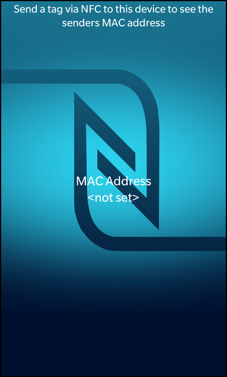

Files:
The NFC MAC address example displays the MAC address of the sender device when receiving data via NFC.

In this example we'll learn how to retrieve the MAC address of the sender device when receiving data via NFC. The business logic is encapsulated in the C++ class MacAddressHandler, which is exported to QML under the name '_macAddressHandler'.
MacAddressHandler macAddressHandler;
QmlDocument *qml = QmlDocument::create("asset:///main.qml").parent(&app);
qml->setContextProperty("_macAddressHandler", &macAddressHandler);
The UI of this sample application consists of a Label which updates with the MAC address of the remote NFC enabled device that you tap. This exchange is done upon sensing a NFC target and successfully establishing a NFC connection.
// The label that shows the MAC address Label { horizontalAlignment: HorizontalAlignment.Center verticalAlignment: VerticalAlignment.Center text: qsTr("MAC Address\n%1").arg(_macAddressHandler.macAddress) textStyle { base: SystemDefaults.TextStyles.TitleText color: Color.White textAlign: TextAlign.Center } multiline: true }
We simply bind the 'macAddress' property of the MacAddressHandler against the 'text' property of the Label, so that the latter gets updated automatically.
This class is tasked with the acquisition of the MAC address, it does so using the Bps library by initializing it, registering with the nfc domain and dealing with the nfc handover to acquire the mac address.
MacAddressHandler::MacAddressHandler(QObject *parent) : QObject(parent) , m_macAddress(tr("<not set>")) { bps_initialize(); subscribe(nfc_get_domain()); const int rc = nfc_request_events(); if (rc == NFC_RESULT_SUCCESS) { qDebug() << "[INFO] Request NFC Events: NFC_RESULT_SUCCESS" << endl; } else { nfc_stop_events(); unsubscribe(nfc_get_domain()); bps_shutdown(); qDebug() << "[ERRO] Request NFC Events: NFC_RESULT_FAILURE" << endl; } nfc_register_handover_listener(BLUETOOTH_HANDOVER); }
This snippet does the initial Bps initialization for use with the current thread and registers with the NFC domain in order to receive nfc events, plus it registers the bluetooth handover listener.
void MacAddressHandler::handleNfcHandoverDetectedEvent(nfc_target_t *target) { nfc_confirm_handover_process(target, true); qDebug() << "[INFO] Confirmed Handover" << endl; } void MacAddressHandler::handleNfcHandoverCompletedEvent(nfc_target_t *target) { unsigned int messageCount = 0; nfc_get_ndef_message_count(target, &messageCount); if (messageCount > 0) { nfc_ndef_message_t *ndefMessage = 0; nfc_get_ndef_message(target, 0, &ndefMessage); nfc_ndef_record_t *record = 0; nfc_get_ndef_record(ndefMessage, 0, &record); // The MAC address is in little-endian order char *macAddress = 0; nfc_get_handover_bluetooth_mac_address(record, &macAddress); m_macAddress.sprintf("%02x:%02x:%02x:%02x:%02x:%02x", (unsigned int) macAddress[5], (unsigned int) macAddress[4], (unsigned int) macAddress[3], (unsigned int) macAddress[2], (unsigned int) macAddress[1], (unsigned int) macAddress[0]); emit macAddressChanged(); qDebug() << "[INFO] MAC ADDRESS: " << m_macAddress; } else { qWarning() << "[ERRO] No NdefMessage's found"; } }
Once the handover has been confirmed and completed, the bluetooth handover data is parsed specifically to extract the mac address value. Which is than formatted into a QString for display by emiting the macAddressChanged() signal, with the string as its argument.